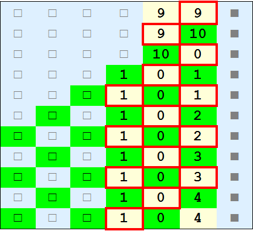

Iterating functions with cellular automata: part 1, successor function
introduction
This is the first notebook in a series exploring the iteration of functions with cellular automata. We will introduce a general system for translating arithmetic functions into cellular automata and we will show how to run and interpret the resulting rules.
The systems discussed in this notebook are 1 dimensional. The rules will work for arbitrary bases, but we will primarily use base 10 for illustrative purposes. The digits of each number are represented by states in the cellular automata and special intermediate states are represented by other states. A high-level explanation of the system discussed here is that the digits of each number are laid out diagonally so that digits further from the radix point interact at later time steps. Our convention will be to have the most significant digit on the left and the least significant digit to the right, i.e., standard mathematical notation.
This notebook will explain the rules used for computing the successor function, i.e. x → x+1, and iteratively apply it to some starting number.
construction
Our system implements the same logic that a full adder uses to add 2 arbitrary-length integers. First, start with a radix point state that persists through time:

To the left of the radix point will be the initial number, with each cell representing a separate digit, e.g., for the decimal number 237:
A special padding state will be used after the last digit and be assumed to extend infinitely to the left. This padding state will function equivalently to 0, but will show where the number ends.
After 1 time step, not much will have happened. All that will be different is that the least significant digit state is now a special intermediate state signifying that it has been incremented by 1:
All other states remain unchanged.
The intermediate results here represent the running sum, which contains information for the next digit to be returned, as well next carry. indicates that 8/10 == 0 will be carried to the left and 8%10 = 8 will be the digit output for the first column.
After time step 2, things start to get interesting:
The neighborhood only needs to be current cell and the cell to the immediate right. The new intermediate state is 3+0 == 3 and the first output digit is 8.
There are now 2 regular states to keep track of: 2 and 8. The 8 will increment to the intermediate 9 state in the next time step and the regular 2 will go to the intermediate 2 state.
Now, since 2 is the left edge of the number, we need a way to handle carries and other cases of increasing number of digits. The regular padding state will now transition into an intermediate padding state to continue the pattern. Functionally, the padding states are equivalent to 0.
Finally, the regular 9 state transitions to an intermediate 10 state, the largest possible intermediate state.
A graphical representation of the evolution through time:
The initial state is the top row and the evolution proceeds downward through time. Notice that the last row has an intermediate 4 state. The carry from the intermediate 10 state incremented the regular 3 state.
The light yellow states represent the regular input and output digits for the numbers. The green states represent the intermediate states that depend on their previous state and their neighbor on the right. The solid square state  is the “radix point”. The empty square states are functionally equivalent to but are useful for denoting the edge of the number.
is the “radix point”. The empty square states are functionally equivalent to but are useful for denoting the edge of the number.
Given a properly formed initial row of  ,
,  , and states representing a starting number, the complete rule table for calculating the next row is:
, and states representing a starting number, the complete rule table for calculating the next row is:
Find the first matching neighborhood of cells on top to calculate the correct state on the bottom. Each cell can be calculated from these rules.
analysis
There has been no effort to minimize the number of states in the cellular automaton. There are 24 total states:
10 regular digit states, 10+1 intermediate states, a regular padding state, an intermediate padding state, and a radix point state.
examples
Here is an example with the initial state starting at 8. The regular states are hilited. The evolution goes from 8 to 12.
Here is an example starting at 99:

The evolution goes from 99 to 103.
Summary
This notebook presented a cellular automata for computing the successor function. Inputs and outputs of a full-adder are combined into a kind of intermediate state that intermixes with regular digit states. In later notebooks we will explain arbitrary addition, subtraction, multiplication, and special cases of division. Then we will move to other mathematical functions such as modulo and bitwise operations, conditional rules, optimizations.